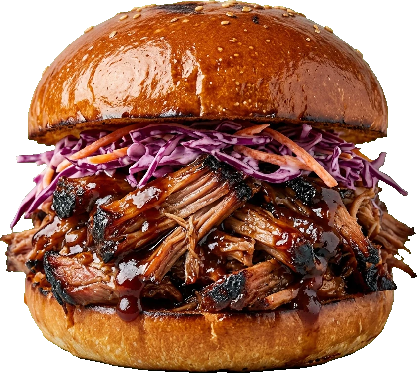

Defumados
Pulled pork e carnes no ponto da fumaça. Sabor de quem leva o burger a sério.

Burgers autorais e defumados feitos com carinho em Cidade Ocidental. Todo dia a partir das 18h.
Pulled pork e carnes no ponto da fumaça. Sabor de quem leva o burger a sério.

Receitas próprias, blend da casa e pão selado na hora.
Fumaça lenta e paciência: o sabor que virou marca da casa.
Ambiente familiar com espaço para as crianças brincarem.
Peça pelo WhatsApp ou on-line e receba quentinho.
Uma variedade de mini hambúrgueres para provar sem pressa. Chame a família e venha com fome.